Boost
UX/UI Design & Front-End Development
Intro
A brief note before we begin. None of the designs showcased here are the actual assets from SpotX’s design system. Everything has been recreated from memory and done in my own personal direction.
At SpotX, I helped lead & create the ad-tech industry’s first home grown design system. We named it Boost.
We started the project by conducting what I call a "safari". In this process, we screenshot all types of patterns, design concepts, and elements across the 7 products in our ecosystem. This process helped us decide what were the core elements we should focus on with Boost and it served as a tool in persuading upper management on the value of building a design system
Boost’s aim was three-fold:
- Improve the ecosystem’s UX
- Free up developers' time & focus
- Increase through-put
Once we identified a core set of components to design, we started with the fundamentals: color & typography. We spent roughly 2-3 months discussing and iterating over colors, and we came up with a heuristic, with the help of the U.S. Web Design System’s magic math concept, that set would-be designers up for success when choosing color combinations
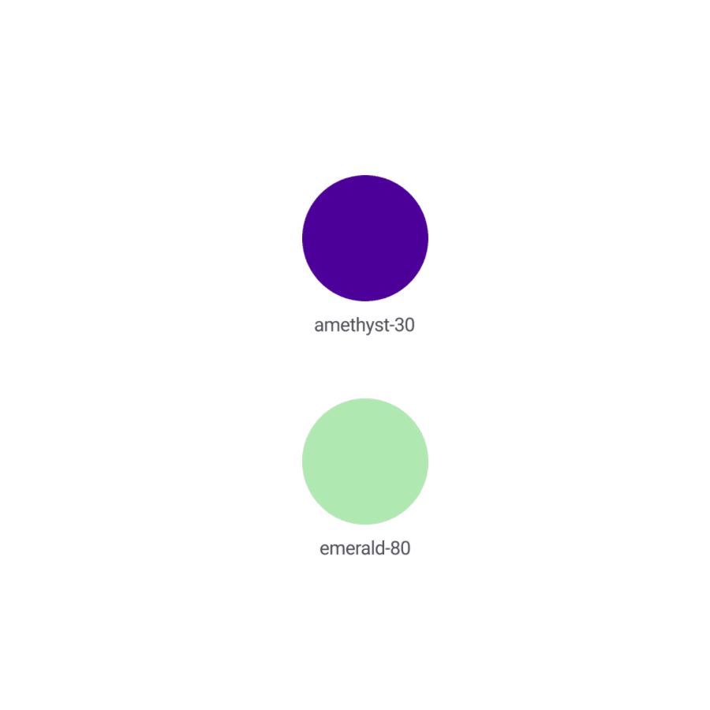Then, we moved into other commonplace HTML5 elements: buttons, inputs, radio buttons, and checkboxes. We designed many variations on each element, pseudo-class states, different sizes, checked/unchecked, etc.
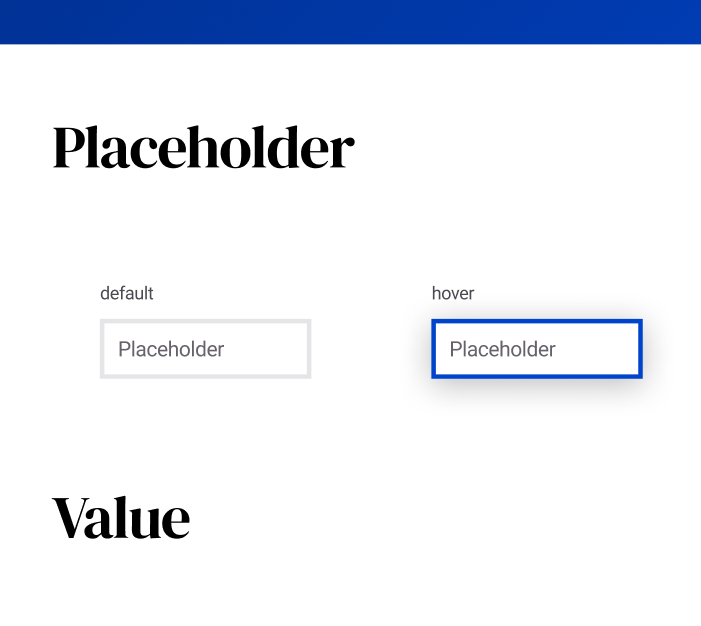In the two years we worked on the project, we often joked how everything in our design system was really a work-in-progress. We would deem components “blessed” whenever a particular component was “done”, but over time, as we tackled more components, we would find ourselves re-designing or tweaking components because of new ideas we discovered along the way.
Conclusions
First, consider each component like an organism. It will evolve over time. No component abides by a set-it-and-forget-it treatment. You’ll wrap up checkboxes. Then, someone will come up with a cool idea on password inputs. And, you’ll be back in checkboxes imparting that cool idea.
Second, Figma is way better than Sketch when it comes to sparking new ideas amongst teams. This is because of it’s real-time collaboration. There’s nothing like showing a concept for a new pattern and having your team-members jump in and riff-on it.
Third, I still haven’t figured a tried-and-true method for ending disputes on design concepts. As many people claim, designers are a passionate lot, and voting to finalize creative disputes isn’t as clear cut as I thought it would’ve been. Our team found that the best way to finalize a design was to simply design it together, meeting-by-meeting.
Extras
Want to see more? You can check out my wireframes in the Figma Project!
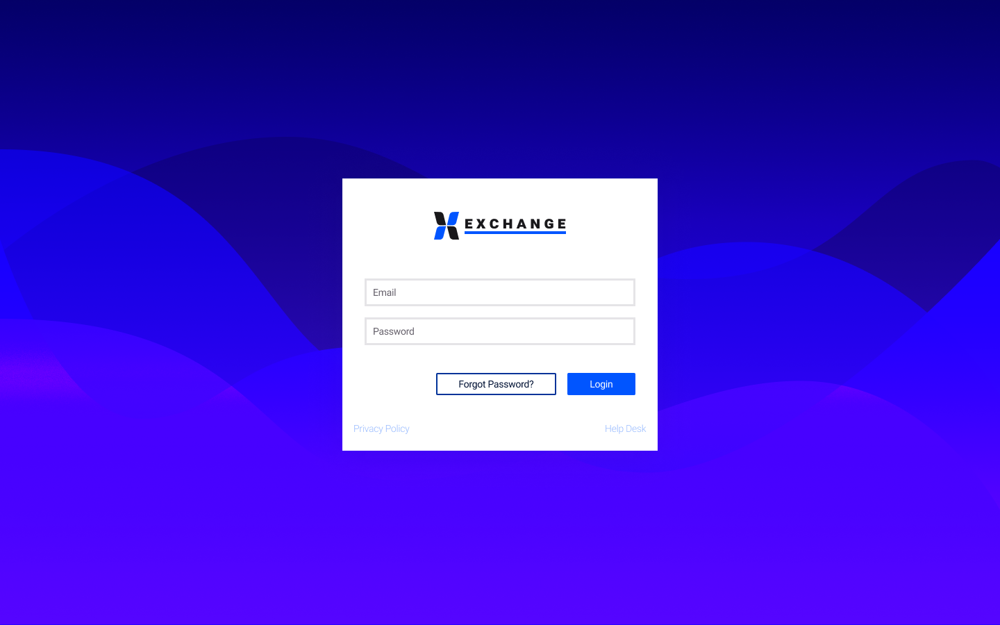 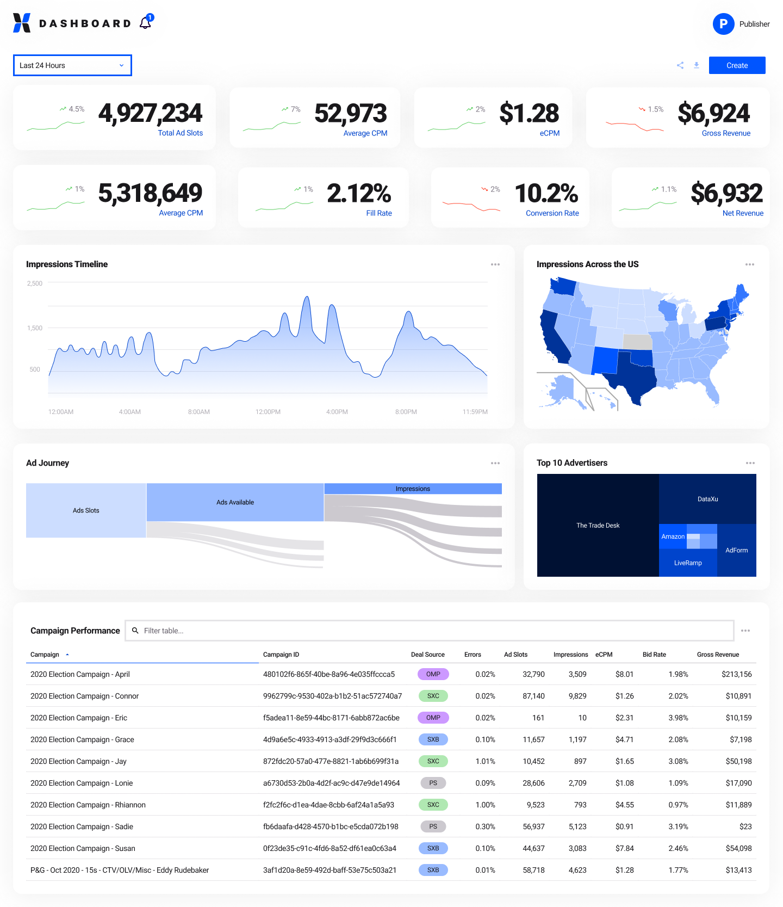 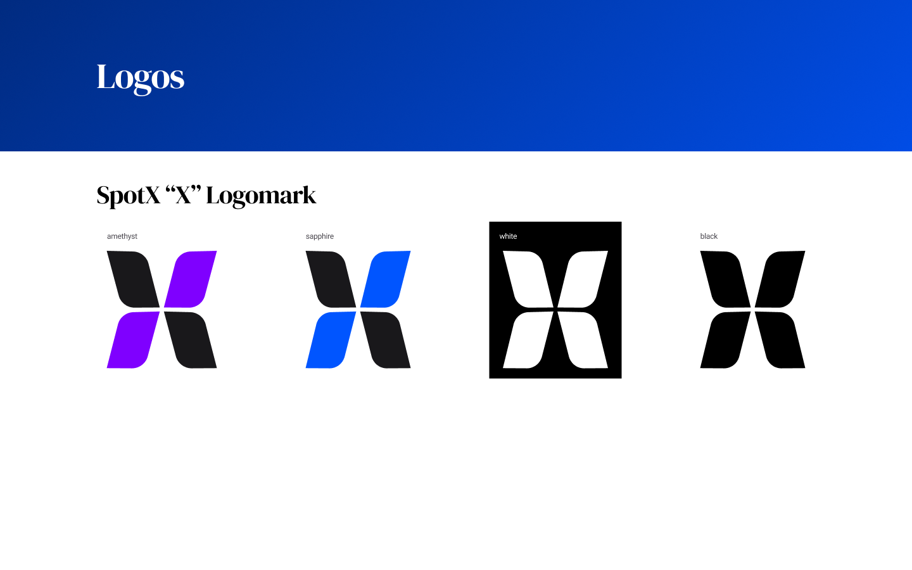 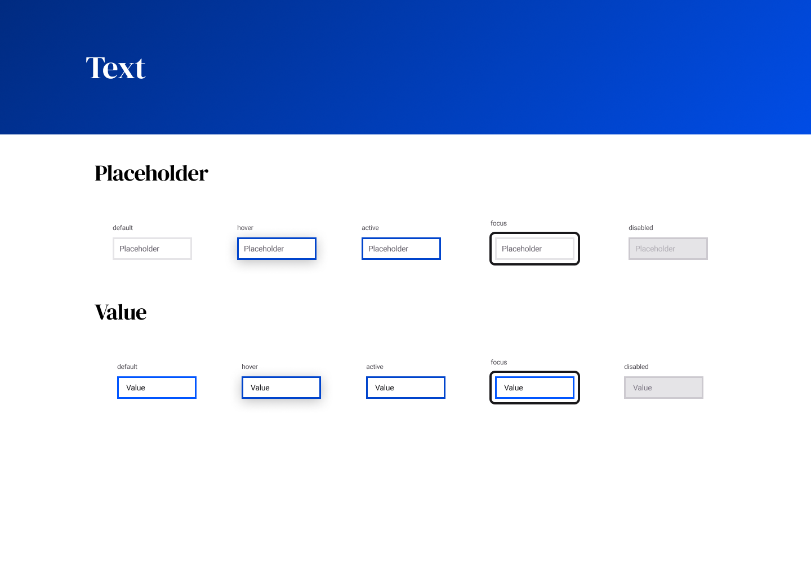
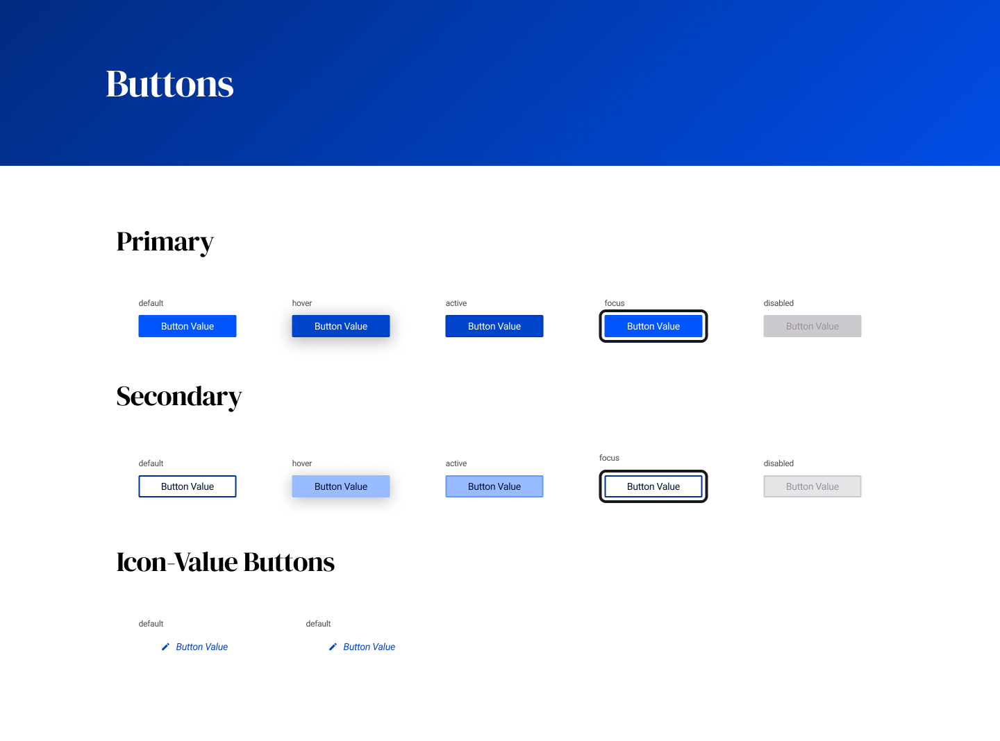
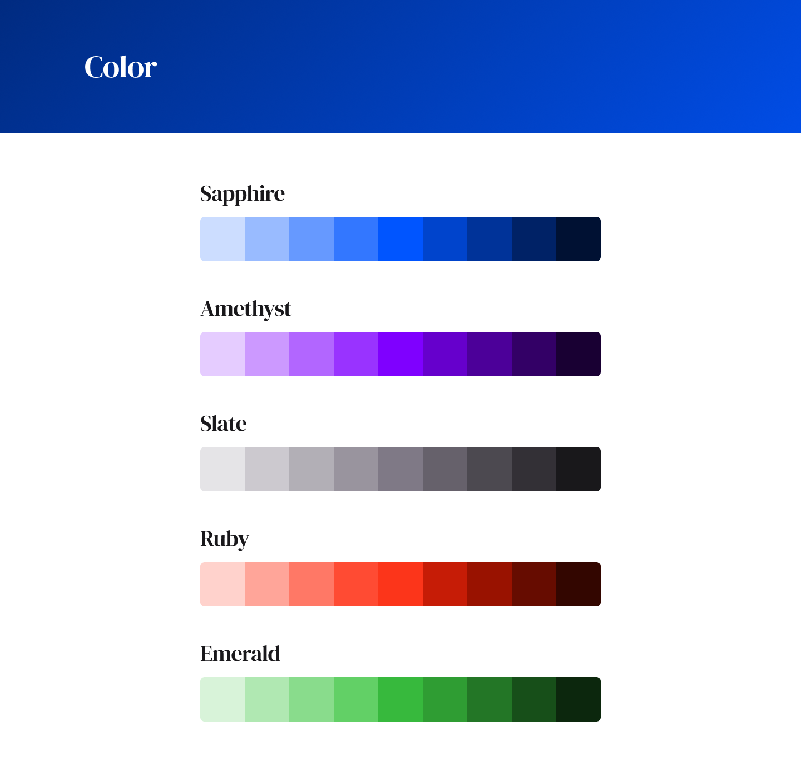
Previous Project: TSP-VMI
Next Project: ExpensAble
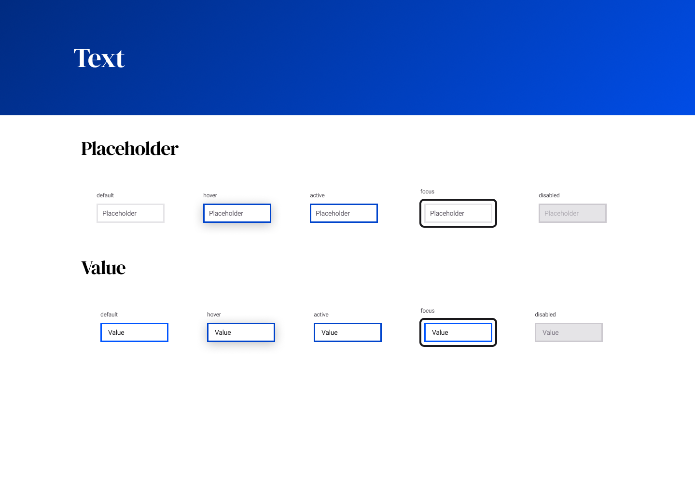
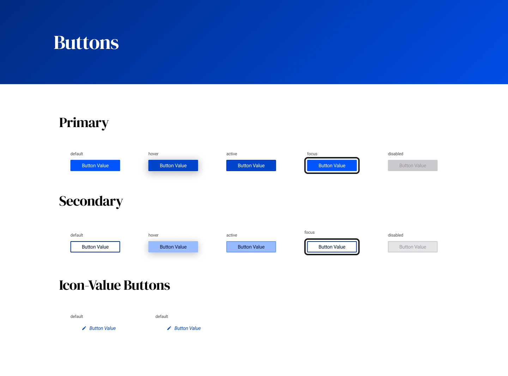
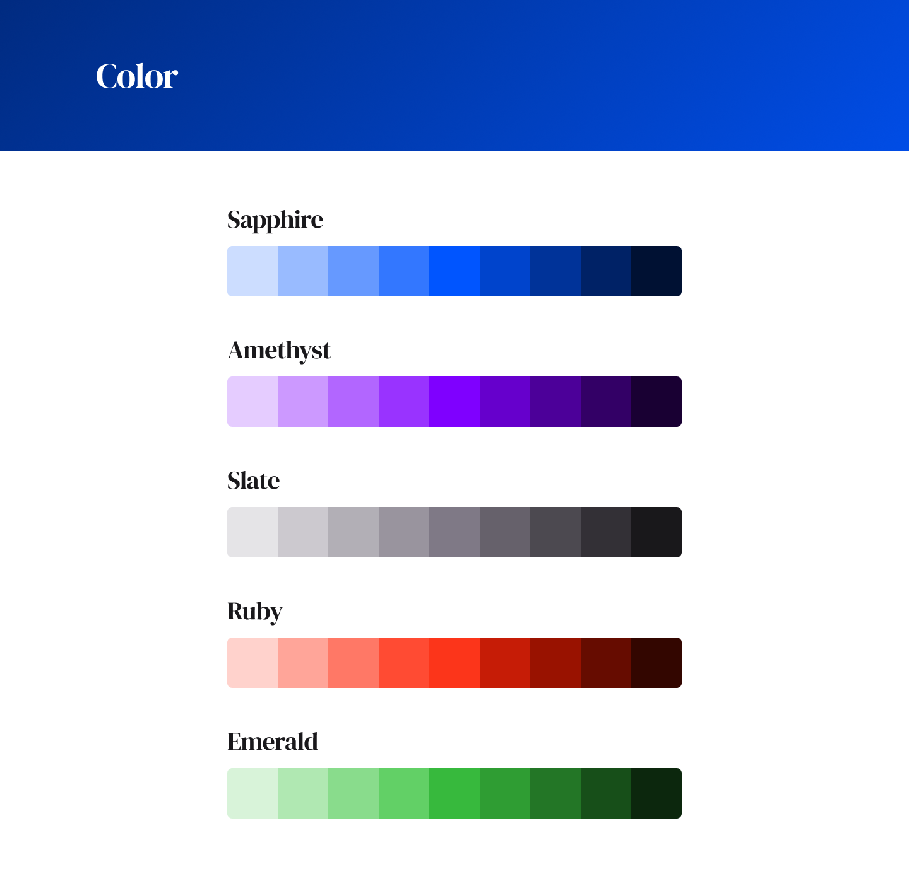
Previous Project: TSP-VMI
Next Project: ExpensAble